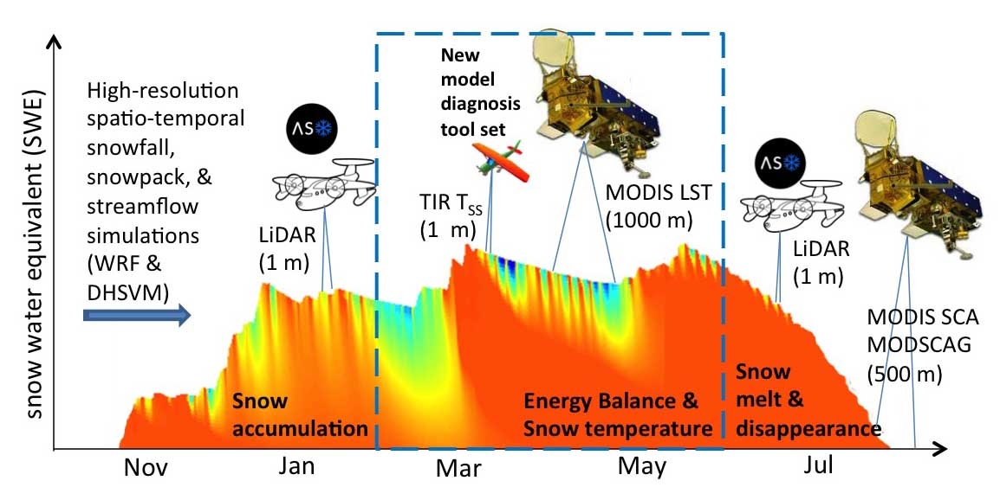

Research Background
Snow in complex terrain is highly variable, so distributed modeling is essential to properly represent snow and snowmelt streamflow. However, distributed model development has been hampered by a lack of spatial measurements (i.e., measurements from a variety of locations). Remote-sensing (using both space-borne and air-borne instruments) provides critical spatial measurements of snow depth and temperature, but to identify the “best” model configuration, multiple measurements are needed at different times of year and at different spatial (i.e., geographic) scales (see figure below).
Research Goals
Our work focuses on determining the best way to integrate distributed snow depth and snow surface temperature measurements into distributed snow modeling. To achieve this aim, we are teaming with the Airborne Snow Observatory (ASO) at NASA’s Jet Propulsion Laboratory (JPL) and with Dr. Chris Chickadel at the UW Applied Physics Lab (APL). ASO snow depth measurements are available approximately monthly since 2013, and we flew our first infrared measurements in February 2016 (see movie below). We are working on using these high resolution measurements that are accurate down to one meter scales to better utilize larger-scale measurements from satellite imagers such as the Moderate Resolution Imaging Spectroradiometer (MODIS).
Movie of warming morning infrared temperatures over Dana Meadows (top) and Kuna Crest (bottom left) for 7 February 2016: Temperatures range from -15 C (dark purple) to above 0 C (bright yellow).